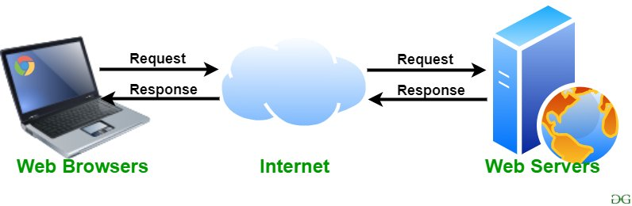

Web Servers Research Site
IT 3203 Research Project
IT 3203 Research Project
The web is one of the most influential technologies developed in the last 100 years. The human race spent millennia trying to connect. Knowledge had to be shared through oral tradition which was basically a generation game of telephone. Then came writing in Mesopotamia, and then printing in 9th century China.
The World Wide Web allows information to be shared from any instant in time. It is real-time accurate and allows all forms of data to be shared. It is an interconnection of computers similar to the human brain. The name World Wide Web is a descriptive name for what it actually is, the network of networks.

Web servers are the pool of information your computer accesses, similar to a library (MDN Web Docs, 2025). This site looks at both types of web servers, where the internet came from, and why it all matters.
| Term | Definition |
|---|---|
| Web Server | A pool of information a computer accesses, like a library. |
| ARPANET | Advanced Research Projects Agency Network. Precursor to the web, made during the Cold War. |
| Static Server | Displays the same fixed data to everyone at all times. |
| Dynamic Server | In a constant state of change, gives each user a specific output. |
| Client | A computer that sends a request to a web server. |
| SQL Injection | A cyberattack that uses malicious queries to find weaknesses in a database. |
The precursor to the web was ARPANET, built during the Cold War as a response to the nuclear threat of Soviet weaponry and a way to keep comms alive during a potential nuclear event.
Web servers are like a library where a user either grabs a book to read or adds one and checks it out. That is essentially what the web does with data.